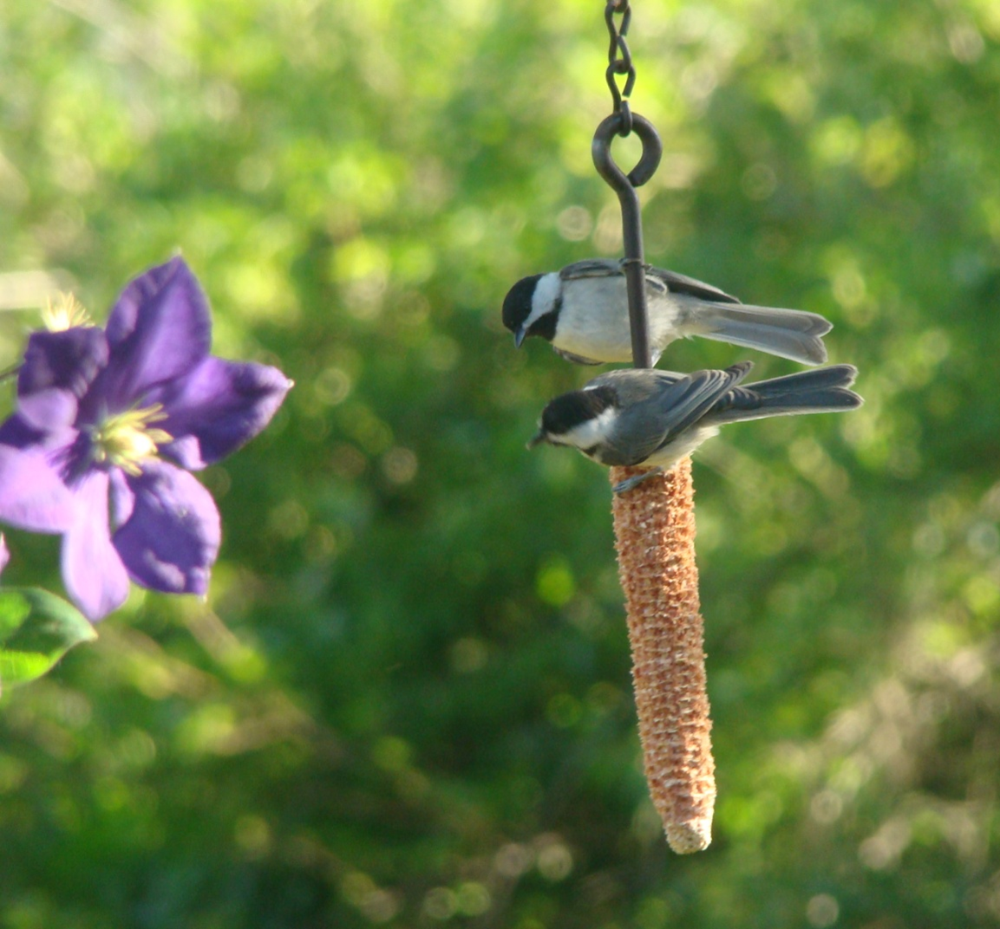

In a letter that my daughter Kathy wrote to her father and me in 1968 while she and her sister Lesley were staying with my parents in Massachusetts, she wrote: "I've been trying to get the chickadees to eat out of my hand. A few days ago one stayed on my hand for about five minutes." A few days later: "The chickadees have been eating out of our hands. Every time they see us now, they land on our hands if we have seeds. One of them I trained is the tamest and comes right to your hands while the others are not so tame."
Apparently the Maine chickadees weren't as "trainable" or we just did not have the time and patience to work with them. Mom was great with children. They learned a lot about birds and nature from her. When she was "up in years" (I thought at the time), she sprained her ankle netting butterflies with her four other grandchildren. She flew kites with them and took them to bird sanctuaries and to Plum Island where often unusual birds were spotted resting on their migratory journeys.
Here in Indiana our chickadees are the Carolinas, a bit smaller with a shortened song, "dee dee dee" rather than the black-capped's full "chick-a-dee dee dee." This is from my own observation and recollection. Wikipedia reports "chick-a-dee-dee-dee" in both species as well as "fee-bee-fee-bay" and that their songs can be a quite complicated combination of up to 14 notes. A "gargling" sound or maybe a "growl" may be made to threaten a rival male or during mating activity. Since in areas where their ranges are in close contact, the two species (plus the mountain chickadee) may hybridize. When this happens, I would imagine their offspring's songs would be a combination of the two or even something new and different. ("Shall we mimic mama or papa? Perhaps to keep the peace we should do both!")
The black-capped chickadee is only ¼ inch larger than the Carolina (4 ½ inches in length to the Carolina's 4 ¼ inches), but the size difference appears greater, perhaps due to minor color variations. They are very similarly marked, with black cap, white cheek, black bib with white and rusty-colored flanks in the black-capped; and smaller bib, no white wing bars, and grayish white breast and under parts and a shorter tail in the Carolina.
They both feed on insects, seeds and berries and visit feeders for sunflower seeds, which they hold in their feet to crack open, and on suet or commercial suet cakes. At feeders in winter, the chickadees arrive in a small group along with nuthatches and an occasional titmouse. This has been attributed to, according to one source, the chickadee calling out when it finds food. If you notice one chickadee being given priority at feeders, it is because their flock has a strict social hierarchy.
A chickadee was the first bird to discover the suet in my new upside-down suet feeder. It minds not a bit clinging to the underside grid to reach the suet inside. They are inquisitive, spunky and somewhat friendly in residential areas. It is reported that they will store food for later retrieval. There was a small apple orchard behind my parents' Massachusetts home. They once watched a chickadee poking a seed into a wizened apple already bristling with sunflower seeds. As opposed to squirrels that may or may not remember where they have stashed food supplies, I've read that birds can remember any number of caches. One source implies they do not use the same spot each time. The previous observation belies that "fact."
Chickadees live in small flocks from two to eight in the winter. In the spring they pair off to raise young. The nests are built in a tree cavity that both male and female excavate. The black-capped's clutch is from six to eight white-speckled eggs that incubate in 12 days. The young fledge in 16 days. Carolina chickadees lay six red-speckled white eggs that hatch and fledge in about the same time-frames as the black-capped. Pairs' monogamy seems to depend upon the region, with some staying together for several years. The female may seek another mate if the nesting attempt fails.
My parents took daily walks in all kinds of weather behind this house where I now live across the meadow, down the farm road into the woods and to the river. They knew where the chickadees were nesting in an old hollow tree trunk and would check the progress of the nestlings. Sadly, things change, and now foot traffic is not welcomed on the farmer's property.
I have read that the chickadees can be quite feisty when handled, i.e., being banded, or when defending their territories. Their numbers seem to be diminishing slightly perhaps due to loss of deciduous forests and the removal of decaying trees.
I love to see these little feathered "ping pong balls" bouncing from limb to limb seeking insects and dashing in to snatch a sunflower seed, scooting up into the maple tree to crack and eat it. To photograph a chickadee, when I see them at the feeders, I focus the camera, which is on a tripod, on the feeder and stand by for its return. It doesn't linger except maybe on suet or to await its turn at a crowded feeder. My spirits are always perked up by seeing this little cheerful visitor.
The chickadee is the state bird of both Maine and Massachusetts.
